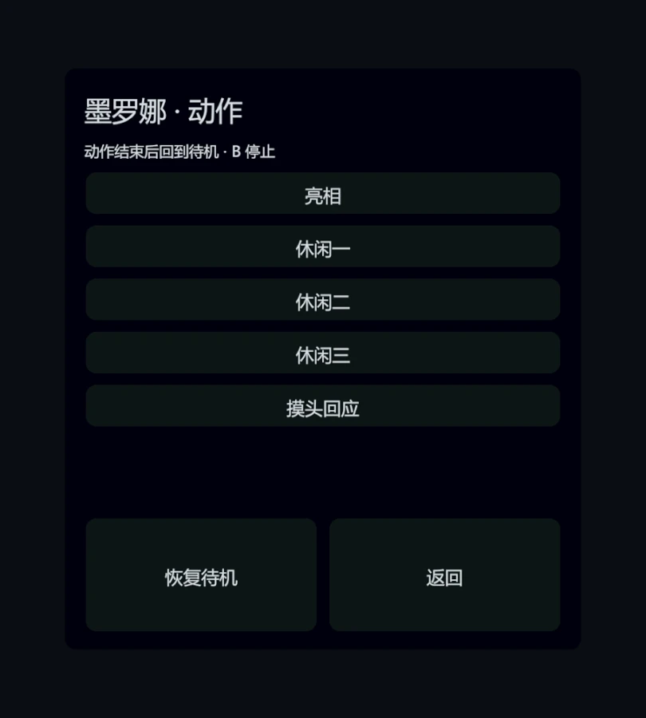

对话与语音
接入 MAICA 人格与对话状态，支持桌面文字输入、麦克风录音和 Quest USB 语音链路，区分等待、回复和中断。
 ROLAND施浩然 · PORTFOLIO
ROLAND施浩然 · PORTFOLIOVR / UNITY · OPENXR · INTERACTION
在桌面和 PCVR 中实现角色对话、语音与空间交互，同时整理第三方游戏的 VR 适配与体验。

MY WORK / CONTRIBUTION & RESULTS
个人项目｜需求、交互设计与 AI 协作集成
本地桌面与 PCVR 预览项目，当前整体 UI 与头显体验待手动验收。
接入 MAICA 人格与对话状态，支持桌面文字输入、麦克风录音和 Quest USB 语音链路，区分等待、回复和中断。
统一桌面与 PCVR 入口，接入场景和角色切换、触碰、牵手、动作菜单与空间牌桌，并检查回到安全位置、停止动作等恢复操作。
整理 Quest → ALVR → SteamVR 的启动与检查步骤，保存构建身份、预检截图和反馈，按版本记录已确认范围与待验收项。
个人预览项目，当前构建为 Build-Release-0511。0509 的连续画面与音频已有确认；0511 整体 UI 尚待手动验收。本页提供制作案例，完整程序仍在本机测试，未作为网页游戏发布。

把常用动作集中为可点击入口，保留恢复待机和返回路径；分别检查文字面板、动作播放与角色状态，避免只能从开发工具触发交互。
项目使用第三方角色资产，页面展示个人集成与交互实践；不提供角色模型或音频资源下载。
以下为第三方游戏体验与本地适配，链接指向原作官方页面。
为 Palworld VR 整理注入、启动与退出顺序，按本轮进程句柄回收关联程序，保留共享 VR 服务与无关同名进程。隔离进程检查已有记录，头显中的最终体验仍按实际运行复核。